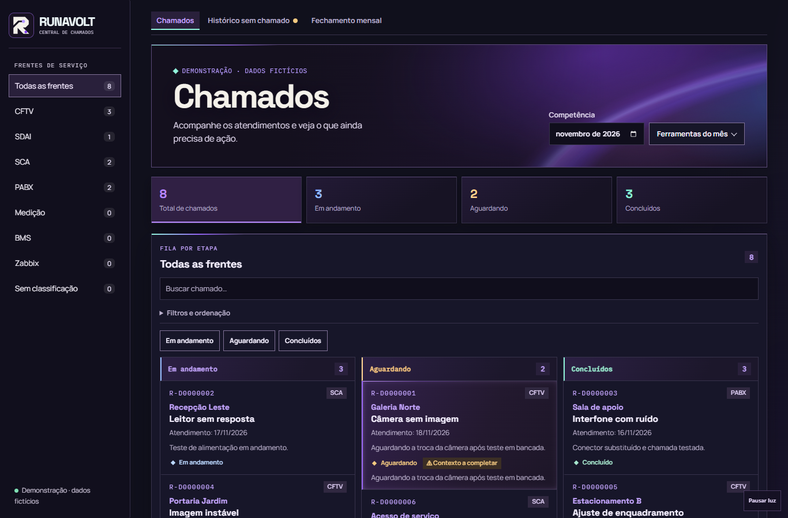
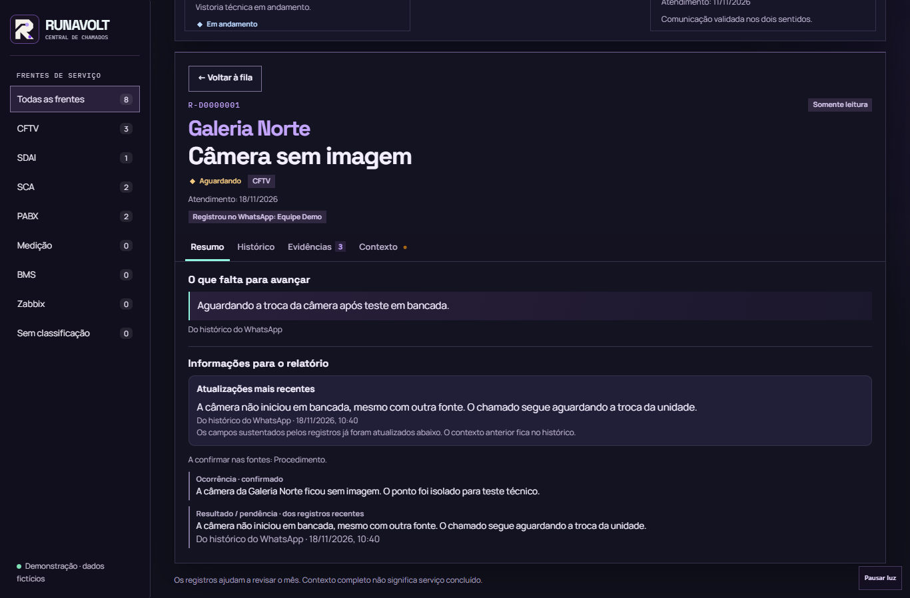
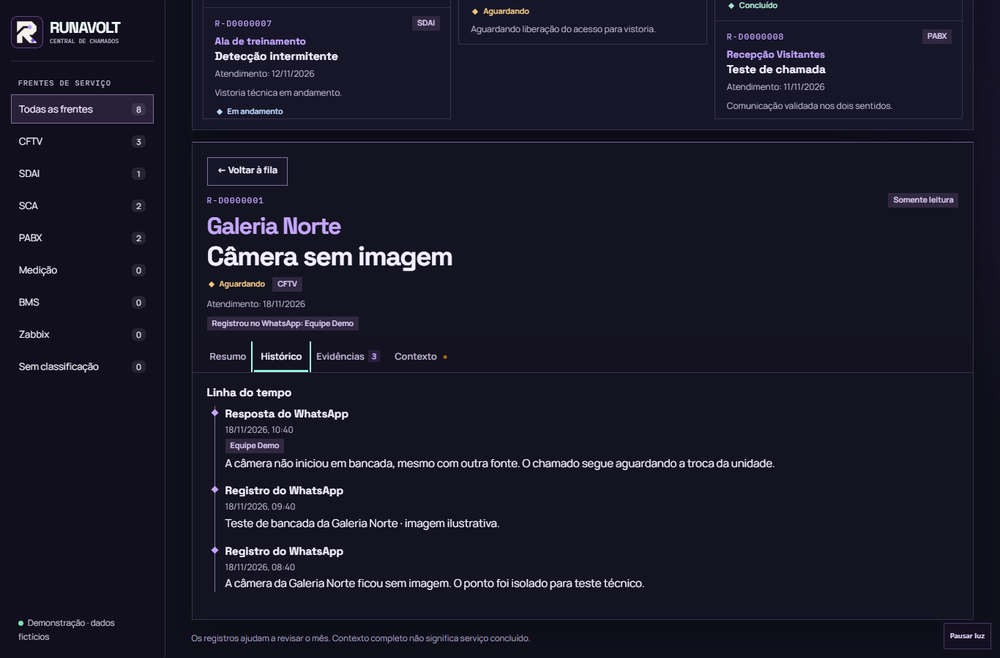
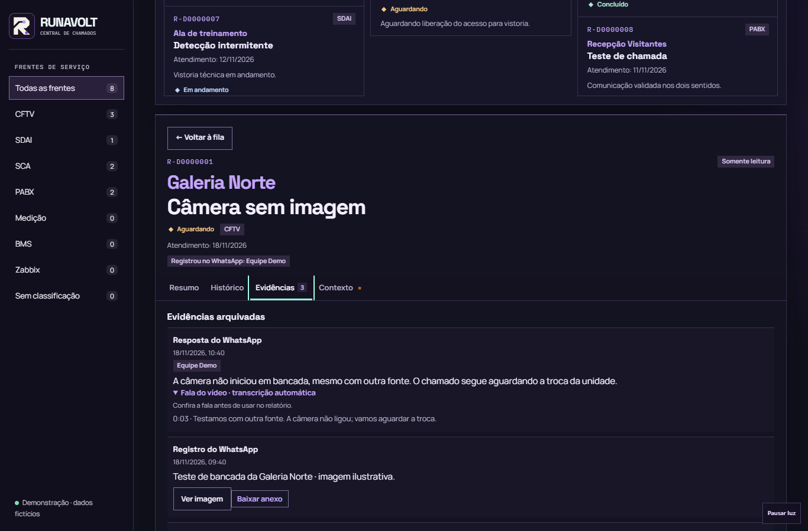
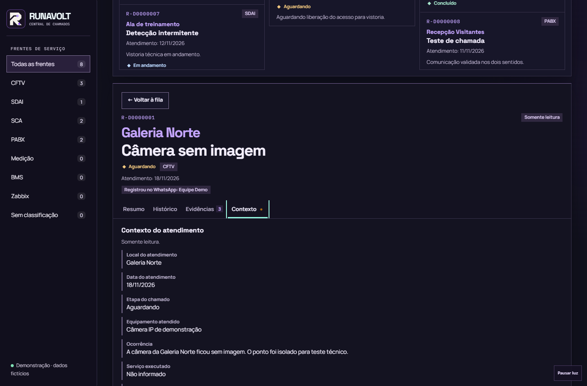
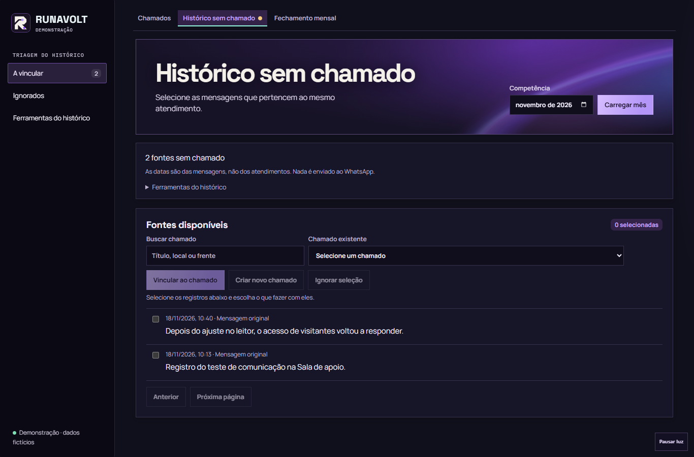
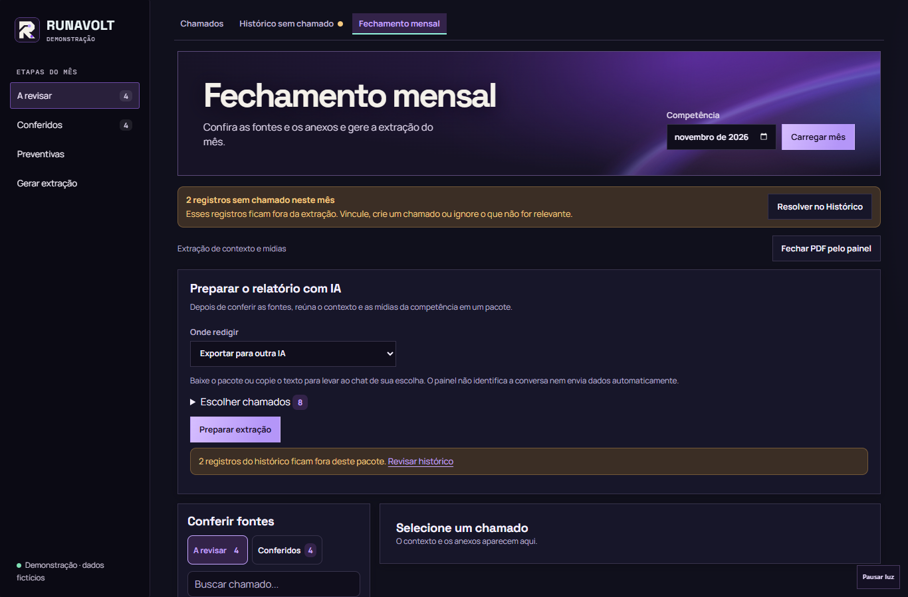
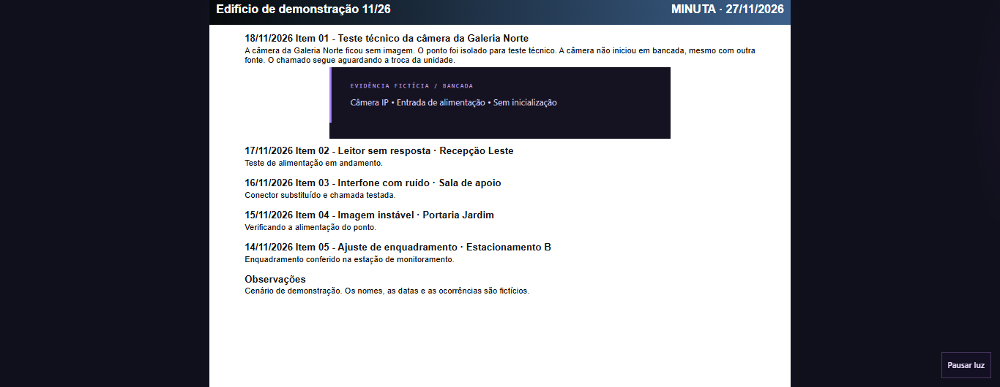
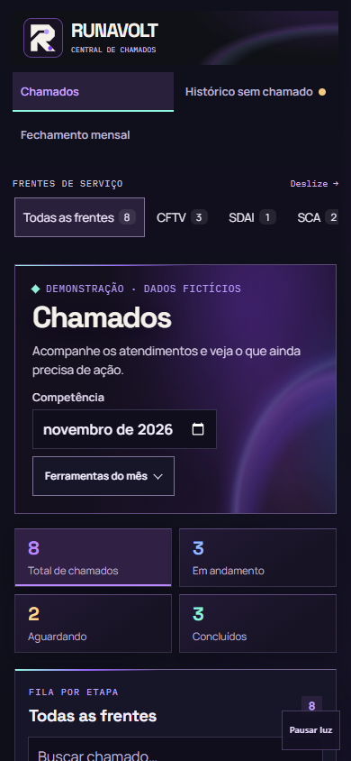
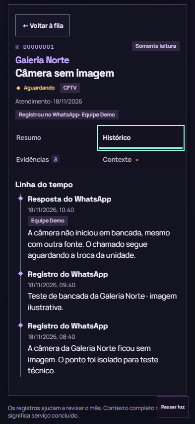

RUNAVOLT / CENTRAL DE CHAMADOS
Do primeiro registro ao relatório.
Veja como um atendimento sai da fila, ganha histórico e evidências e entra no fechamento do mês. A interface é real; os chamados são inventados para esta demonstração.


01 / EM MOVIMENTO
Um chamado, duas formas de acompanhar
Gravações curtas e sem áudio. No PC, acompanhe a fila e abra o histórico. No celular, veja como as evidências e o contexto ficam ao alcance do toque.
Tour no celular
WEB MÓVEL02 / DA FILA AO FECHAMENTO
O que cada tela resolve
Selecione qualquer captura para ver os detalhes em tamanho maior.
Resumo
01A etapa, a pendência e a última atualização técnica ficam juntas.


Histórico do chamado
02A linha do tempo mostra o que mudou entre o registro e a última atualização.


Evidências
03Mensagens, mídias e transcrições ficam vinculadas ao atendimento.


Contexto
04Confira o que já está registrado e o que ainda falta preencher.


Histórico sem chamado
05Revise as mensagens sem vínculo antes de criar ou atualizar um atendimento.


Fechamento mensal
06Confira as fontes e selecione o que entra no relatório da competência.


Minuta do relatório
07Veja como os registros e as evidências revisadas aparecem na minuta, antes de salvar o PDF.


03 / PLATAFORMAS
A mesma Central, outra largura.
- PC
- Central web, com visão ampla da fila e do atendimento.
- Android
- Existe APK da Central. A captura ao lado mostra a interface web que ele carrega, em tamanho de celular.
- iPhone
- Prévia responsiva no tamanho de um iPhone. Não é app nativo para iOS nem teste em um aparelho físico.



